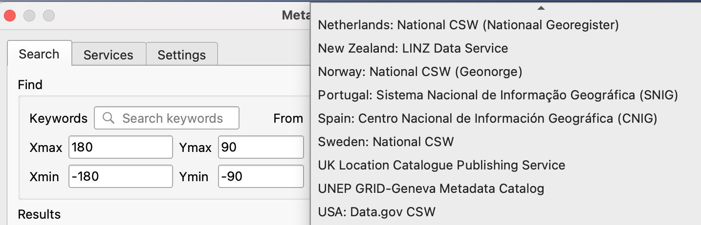
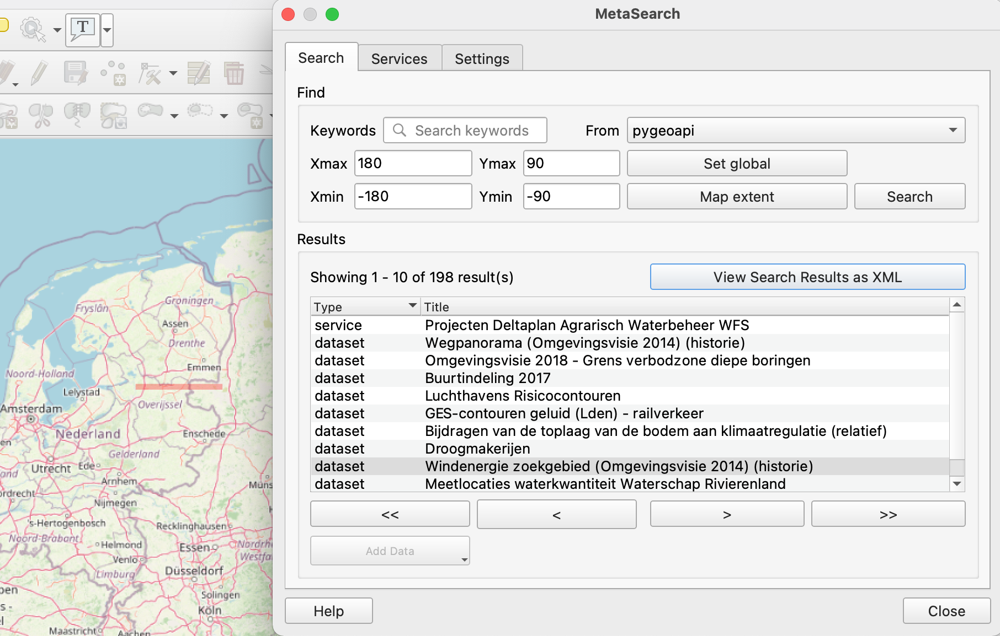

Exercício 6 - Metadados via OGC API - Records¶
A OGC API - Records fornece uma API de Web com a capacidade de criar, modificar, e consultar metadados na Web:
- Leia a especificação OGC API - Records: Part 1: Core no website da OGC.
A OGC API - Records utiliza a OGC API - Features como bloco de construção, permitindo assim implementação e integração simplificadas para clientes e utilizadores.
Suporte na pygeoapi¶
A pygeoapi suporta a especificação OGC API - Records, usando Elasticsearch e TinyDB rasterio como backends principais.
Note
Consulte a documentação oficial para mais informações sobre backends de catálogo/metadados suportados
Publicar registos de metadados na pygeoapi¶
Com a pygeoapi vamos configurar OGC API - Records usando qualquer fornecedor de dados suportado. Neste exercício vamos usar o backend
de catálogo TinyDB. Vamos utilizar o catálogo de exemplo em workshop/exercises/data/tartu/metadata/catalogue.tinydb.
Atualizar a configuração da pygeoapi
Abra o ficheiro de configuração da pygeoapi num editor de texto. Adicione uma nova secção de conjunto de dados da seguinte forma:
Guarde a configuração e reinicie o Docker Compose. Navegue para http://localhost:5000/collections para avaliar se o novo conjunto de dados foi publicado.
Formatos de metadados¶
Por defeito, a pygeoapi suporta e espera o modelo de records e os "queryables" da OGC API - Records. Para formatos de metadados adicionais, pode desenvolver o seu próprio plugin personalizado para a pygeoapi, ou converter os seus metadados para o modelo de records da OGC API - Records antes de os adicionar à pygeoapi.
Instalar a OWSLib
Se não tiver o Python instalado, considere executar este exercício num container Docker. Consulte o Capítulo de Configuração.
Exemplo de loader de ISO 19139 para TinyDBCatalogue¶
É possível carregar mais metadados de exemplo ISO19139 numa base de dados TinyDB com o seguinte script (raw):
Se não tiver o curl instalado, copie o URL acima para o seu navegador web e guarde localmente.
Se não tiver o Python instalado, pode usar o loader utilizando o container Docker da OWSLib. Consulte o Capítulo de Configuração.
Usar o container Docker da OWSLib para carregar metadados
cd workshop/exercises
docker run -it --rm --network=host --name owslib -v $(pwd)/data:/data python:3.10-slim /bin/bash
pip3 install owslib
apt-get update -y && apt-get install curl -y
curl -O https://raw.githubusercontent.com/geopython/pygeoapi/master/tests/load_tinydb_records.py
python3 load_tinydb_records.py /data/tartu/metadata/xml /data/tartu/metadata/catalogue.tinydb
cd workshop/exercises
docker run -it --rm --network=host --name owslib -v ${pwd}/data:/data python:3.10-slim /bin/bash
pip3 install owslib
apt-get update -y && apt-get install curl -y
curl -O https://raw.githubusercontent.com/geopython/pygeoapi/master/tests/load_tinydb_records.py
python3 load_tinydb_records.py /data/tartu/metadata/xml /data/tartu/metadata/catalogue.tinydb
Navegue para http://localhost:5000/collections/example_catalogue para avaliar se os novos metadados foram publicados na coleção.
A pygeoapi como um proxy de CSW¶
Pode verificar a secção "pygeoapi como uma Ponte para Outros serviços" para aprender como publicar CSW como OGC API - Records.
Acesso de cliente¶
QGIS¶
O QGIS suporta a OGC API - Records através do plugin MetaSearch. O MetaSearch focava-se originalmente apenas em Catalogue Service for the Web (OGC:CSW), mas foi estendido para a OGC API - Records. O MetaSearch é um plugin padrão no QGIS e não requer instalação adicional.
Consultar a OGC API - Records a partir do QGIS
Siga estes passos para se conectar a um serviço e consultar conjuntos de dados:
- Localize o plugin MetaSearch no menu Web ou na Barra de Ferramentas
 . O painel de pesquisa principal aparecerá com a lista de catálogos padrão do MetaSearch já preenchida.
. O painel de pesquisa principal aparecerá com a lista de catálogos padrão do MetaSearch já preenchida.

- abra o separador
Services, para encontrar o botãoNewpara criar uma nova ligação - adicione uma ligação a
https://demo.pygeoapi.io/master - clique em
Service Infopara obter informações sobre o serviço - volte ao separador Search
- selecione a ligação que acabou de criar
- escreva um termo de pesquisa e clique em
search - repare que quando seleciona um resultado da pesquisa, uma pegada vermelha é desenhada no mapa, destacando a localização do conjunto de dados

OWSLib¶
A OWSLib é uma biblioteca Python para interagir com OGC Web Services e suporta várias OGC APIs, incluindo a OGC API - Records.
Interagir com a OGC API - Records via OWSLib
Se não tiver o Python instalado, considere executar este exercício num contentor Docker. Consulte o Capítulo de Configuração.
Depois, inicie uma sessão de consola Python com python3 (pare a sessão escrevendo exit()).
>>> from owslib.ogcapi.records import Records
>>> SERVICE_URL = 'https://demo.pygeoapi.io/master/'
>>> w = Records(SERVICE_URL)
>>> w.url
'https://demo.pygeoapi.io/master'
>>> dutch_metacat = w.collection('dutch-metadata')
>>> dutch_metacat['id']
'dutch-metadata'
>>> dutch_metacat['title']
'Sample metadata records from Dutch Nationaal georegister'
>>> dutch_metacat['description']
'Sample metadata records from Dutch Nationaal georegister'
>>> dutch_metacat_query = w.collection_items('dutch-metadata', limit=1)
>>> dutch_metacat_query['numberMatched']
198
>>> dutch_metacat_query['numberReturned']
1
>>> dutch_metacat_query = w.collection_items('dutch-metadata', q='Wegpanorama')
>>> dutch_metacat_query['numberMatched']
2
>>> from owslib.ogcapi.records import Records
>>> SERVICE_URL = 'https://demo.pygeoapi.io/master/'
>>> w = Records(SERVICE_URL)
>>> w.url
'https://demo.pygeoapi.io/master'
>>> dutch_metacat = w.collection('dutch-metadata')
>>> dutch_metacat['id']
'dutch-metadata'
>>> dutch_metacat['title']
'Sample metadata records from Dutch Nationaal georegister'
>>> dutch_metacat['description']
'Sample metadata records from Dutch Nationaal georegister'
>>> dutch_metacat_query = w.collection_items('dutch-metadata', limit=1)
>>> dutch_metacat_query['numberMatched']
198
>>> dutch_metacat_query['numberReturned']
1
>>> dutch_metacat_query = w.collection_items('dutch-metadata', q='Wegpanorama')
>>> dutch_metacat_query['numberMatched']
2
Note
Consulte a documentação oficial da OWSLib para mais exemplos.
Resumo¶
Parabéns! Agora é capaz de publicar metadados na pygeoapi.